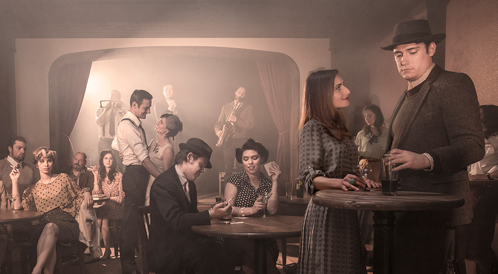

2 Jun 2022
How did breweries survive the Prohibition era?
The National Prohibition, or 13-year ban on beer production started by the 18th Amendment, forced the greatest brewers in America to develop innovative new methods for their businesses to survive. From 1900 to 1913, America’s amount of beer produced increased from 1.2 billion to 2 billion gallons, and by 1916 about 1,300 American breweries were in operation. On the day January 17, 1920, the 1,300 existing American brewers were forced to adapt or die, as many did, since after Prohibition ended in 1933 less than 100 breweries remained in operation.Some of America’s breweries did survive Prohibition - mostly by making “near beer”—a drink that tasted like beer, but had less than 0.5% alcohol content. Near beer was a product that worked well for some companies, but not as well for others. The introduction and rapid growth of bootlegging and speakeasies made real beer fairly easy to access, therefore people didn’t have a desire for near beer anymore and the market crashed. Other brewing companies made and sold soft drinks, fruit juices, malted milk, malt syrup, yeast, ice cream, and more obscure products like vehicles and pottery. Of course the sale of beer was banned, but the sale of ingredients to make beer was not. At the time, malt syrup was a product advertised for baking, however, many purchasers bought the extract with intentions of crafting their own home-brewed beer. Budweiser brand even had a cardboard sign advertising their barely malt syrup with a winking grocer, who knows good and well what that barely malt syrup is actually going to be used for.
Anheuser Busch
Anheuser Busch was one of the most prepared brewing companies, seeing a potential for a Prohibition in the 1890s. Due to this foresight, Busch appointed his chief chemist the duty of developing and producing a non-alcoholic cereal beverage that contained all the same flavors as regular beer, which he named Bevo. Bevo was introduced in 1916 and sold more than 2.2 million cases in merely 6 months. Busch then invested $10 million into building the world’s largest bottling facility, which opened in 1918. In 1920 at the start of Prohibition, the Bevo sales tanked with the market, so they sold half of their significant real estate holdings, and to further help their businesses put out an array of over 25 non-alcoholic products including: infant formula, frozen eggs, carbonated coffee, and tea products.The most unique switch Anheuser Busch made was expanding on their vehicle department. One of the company’s most successful vehicular products was a camper designed for the top of the Ford Chassis, which they called the Lampsteed Kampkar. They also designed the Bevo Victory Boat, a vehicle equipped for land and water use. The final unique method the brewers used was building police vans for Prohibition officers used to gather and catch bootleggers and moonshiners.
Coors
Coors unfortunately had to deal with the alcohol sales ban earlier than most everyone else, since the alcohol sales ban in Colorado started four years before the rest of the United States. Upon the start of Prohibition, Coors became a leader in the production of malted milk, which they retailed to soda fountains, candy businesses, and even advertised as infant fare. Just like Busch, Coors made an interesting resource shift to making ceramics and pottery, which became known as the Coors Porcelain Company. With their Colorado clay, they made items such as tea sets and dinnerware, as well as spark plugs and lab equipment.
Miller
Barely surviving Prohibition, Miller Brewing Company in Milwaukee was once even listed for sale on the market in 1925, but had no buyers. Along with Busch and others, Miller made a near beer named Vivo, along with soft drinks, malted milk, and malt syrup, but a big reason for their survival through the Prohibition was due to their real estate holdings and investment income. Prior to Prohibition, Miller owned prime city location saloons to distribute their beer. During the Prohibition era, Miller sold these saloons and benefited from the significant investments in municipal and international bonds, mortgage loans, as well as the government securities.
Pabst
Another Milwaukee based brewing company, Pabst, took a different route to survive the Prohibition era. Initially Pabst sold malt syrup like most of the others, but then switched to more interesting money making methods. Pabst bought a soft drink establishment, and leased a portion of the space to the renowned motorcycle company Harley-Davidson. On top of this, Pabst moved from the brewing industry entirely and entered the dairy industry selling more than eight million pounds of a processed cheese spread, which they named Pabst-ett, and aged in the brewery’s ice cellars. The product was eventually sold to Kraft, post Prohibition.
Yuengling
D.G. Yuengling & Son, Inc., the Pottsville, Pennsylvania brewing company had been operating roughly a century prior to Prohibitions start. At the start of Prohibition, they started producing a near beer and ice cream that were tremendously popular, so popular in fact that they opened a dairy across the street from the brewery, and began an ice cream production company, and stored in their massive refrigeration facilities. The dairy business and Yuengling’s Ice Cream brand remained until 1985, and was revived in 2014.
Other Success Stories
Of course many other companies had their ways of staying afloat during this difficult time. Minhas Craft Brewery of Wisconsin, later named Blumer Products Company, produced and distributed products including: case tractors, silo fillers, separators, as well as road machinery. Saranac Brewery produced soft drinks along with other non-alcoholic goods. Pittsburgh Brewing Company made near beer, ice cream, and ran a cold storage facility. Stephens Point Brewery in Wisconsin sold near beer and soft drinks, as did Schells Brewing Company in Minnesota. Detroits, Strohs Brewing Company made malt syrups and ice cream, but the company was eventually sold in pieces to Miller and Pabst in 1999.Not many brewers expected Prohibition to last 13 years, and thinking they could hang on for two or three years really started to struggle and search for other creative ideas by 1925. Unfortunately, many of the smaller craft breweries did not survive, which means that when beer did begin to flow again in 1933, the remaining big business brewing companies had very little competition.A crazy time this must have been! Thankfully the 21st Amendment ended the Prohibition, and that we don’t have to experience anything like this today, especially having the ever-growing beer selection there has ever been. If you're a fan of wide selections of beer then check out our craft beer of the month club. Cheers!